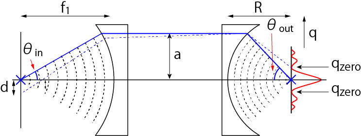

レンズによる集光-03
レンズのNAとの関係
下図のように，結像面で強度が0となる位置から逆算して実像面での変位ｄを計算しましょう．

\(\Large q_{zero} = 6.01 \frac{1}{\lambda \ sin \ \theta_{out}} \)
であり，
\(\Large M = \frac{sin \ \theta_{out}}{sin \ \theta_{in}} \)
なので，
\(\Large q_{zero} = 0.61 \frac{\lambda}{ \ sin \ \theta_{in} } M \)
となります．実像面での変位ｄは，
\(\Large q_{zero} = d \times M \)
なので，結局，
\(\Large d = 0.61 \frac{\lambda}{ \ sin \ \theta_{in} } \)
となります．実際には空間の屈折率が関与しますので，
\(\Large d = 0.61 \frac{\lambda}{n \ sin \ \theta_{in} } \)
となり，教科書でよく見られる分解能の式を導き出すことができました．
分解能は倍率Mに依存せず，波長λ，NAのみに依存することがわかります．
では，結像レンズは同じで対物レンズのNAを変えた場合，どうなるのでしょう？